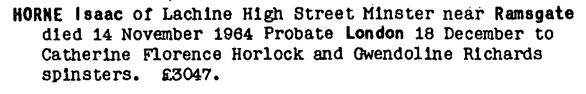
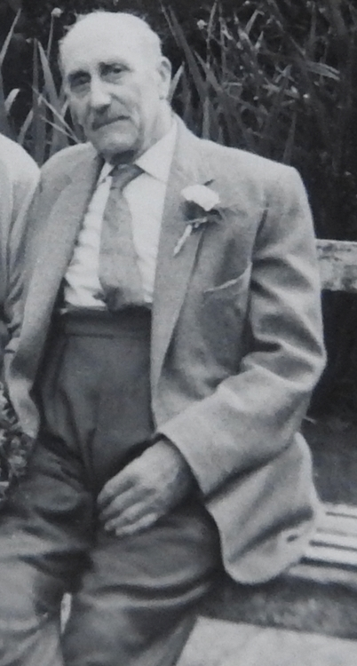
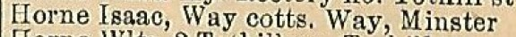
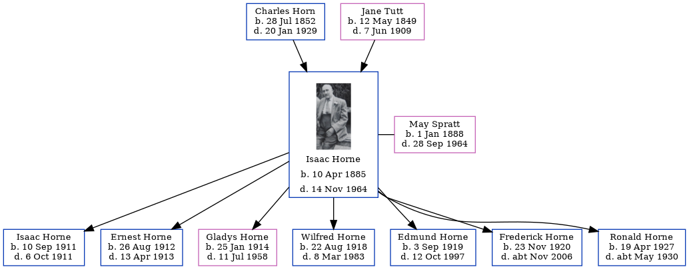

Isaac Horne 1885 - 1964
[ Home ] | [ Calendar ] | [ Surnames Index ] | [ Errors ] | [ Family History ]A hay trusser & thatcher heavy worker market gardener, vanman and thatcher and the 2nd of 3 children of Charles Horn (a waggoner on a farm) and Jane Tutt (a laundress), Isaac Horne, the grandfather of Nigel Horne, was born in Drapers Farm, Margate, Kent, England on 10 Apr 18851,2,3,4,5,6,7,8 and married May Spratt (with whom he had 7 children: Isaac George, Ernest John, Gladys Jane, Wilfred George, Edmund Frank, Frederick Norman and Ronald Leonard) at All Saints Church, Westbrook, Margate, Kent, England on 2 Jul 191012 (All Saints Church, Westbrook).
During his life, he was living at Drapers Cottage in Margate on 5 Apr 189115; at 15 Haine Cottages, St Lawrence, Thanet, Kent on 31 Mar 190116; at 4 Newington Terrace, St Lawrence, Thanet, Kent on 2 Apr 191117; at Pansy Cottage, Way, Minster, Thanet, Kent on 19 Jun 19218; at Way Cottages, Minster, Thanet, Kent on 28 Aug 1931, in 1935, in 1936 and on 29 Sept 19394; on The Cottage, Foxborough Lane, Minster, Thanet, Kent in 195513 and in 1960; and at Lachine, 22 High Street, Minster, Thanet, Kent in 196314 and in 1964. In 1921 he was working at Own Account.
He died on 14 Nov 1964 in Haine Hospital, Ramsgate, Kent9,10,11 (heart failure; bronchitis; carcenoma of the rectum and secondary in liver and lungs) and was buried on Minster Cemetery, Tothill Street, Minster, Thanet, Kent in 1964.
Parents
- Charles was born on 28 Jul 1852
- Jane was born on 12 May 1849
Children
- Isaac George was born on 10 Sept 1911
- Ernest John was born on 26 Aug 1912
- Gladys Jane was born on 25 Jan 1914
- Wilfred George was born on 22 Aug 1918
- Edmund Frank was born on 3 Sept 1919
- Frederick Norman was born on 23 Nov 1920
- Ronald Leonard was born on 19 Apr 1927
Citations
- 1891 England Census Online publication - Provo, UT, USA: The Generations Network, Inc., 2005.Original data - Census Returns of England and Wales, 1891. Kew, Surrey, England: The National Archives of the UK (TNA): Public Record Office (PRO), 1891. Data imaged from The National
- 1901 England Census Online publication - Provo, UT, USA: The Generations Network, Inc., 2005.Original data - Census Returns of England and Wales, 1901. Kew, Surrey, England: The National Archives of the UK (TNA): Public Record Office (PRO), 1901. Data imaged from the National
- 1911 England Census Online publication - Provo, UT, USA: Ancestry.com Operations, Inc., 2011.Original data - Census Returns of England and Wales, 1911. Kew, Surrey, England: The National Archives of the UK (TNA), 1911. Data imaged from the National Archives, London, England.
- 1939 Register - Findmypast (was the head of the household)
- England & Wales, FreeBMD Birth Index, 1837-1915 Online publication - Provo, UT, USA: The Generations Network, Inc., 2006.Original data - General Register Office. England and Wales Civil Registration Indexes. London, England: General Register Office. © Crown copyright. Published by permission of the Cont
- Other
- Volume: 2A; Page: 893; Line Number: 255; Record set: England & Wales births 1837-2006; Subcategory: Births & baptisms; Category: Birth, Marriage & Death (Parish Registers); Collections from: United Kingdom;
- 1921 Census Of England & Wales - Findmypast (was age 36 and the head of the household)
- England & Wales Government Probate Death Index 1858-2019 - Findmypast
- England & Wales, Death Index: 1984-2005 Online publication - Provo, UT, USA: The Generations Network, Inc., 2007.Original data - General Register Office. England and Wales Civil Registration Indexes. London, England: General Register Office. © Crown copyright. Published by permission of the Cont
- England & Wales, National Probate Calendar (Index of Wills and Administrations),1861-1941 Online publication - Provo, UT, USA: Ancestry.com Operations Inc, 2010.Original data - Principal Probate Registry. Calendar of the Grants of Probate and Letters of Administration made in the Probate Registries of the High Court of Justice in England. Londo
- Other
- 1955 Kelly's Thanet Directory
- 1963 Kelly's Thanet Directory
- 1891 England, Wales & Scotland Census - Findmypast (was age 6 and the son of the head of the household)
- 1901 England, Wales & Scotland Census - Findmypast (was age 15 and the son of the head of the household)
- 1911 Census for England & Wales - Findmypast (was age 25 and the head of the household)
Notes
Also spelt Isac.
Media
isaac horne - may spratt - gladys horne - headstone

Isaac Horne
Isaac Horn - birth certificate

Isaac Horne - May Spratt - marriage certificate

Isaac Horne - probate

Isaac Horne - death certificate

Isaac Horne - 2

Isaac Horne
Thanet Times July 5, 1960

Thanet Times July 5, 1960
Kelly's Isle of Thanet Directory - 1936

1955 Kelly's Thanet Directory

1935 Kelly's Thanet Directory

1963 Kelly's Thanet Directory

England & Wales deaths 1837-2007 - BMD/D/1964/4/AZ/000410/183
1901 England, Wales & Scotland Census Transcription - GBC-1901-0007467101
1939 Register Transcription - TNA-R39-1820-1820H-015-06
1939 Register Transcription - TNA-R39-1820-1820H-015-08
England & Wales marriages 1837-2008 - BMD/M/1910/3/AZ/000478/041
1911 Census for England & Wales - GBC/1911/RG14/04525/0203/1
1939 Register Transcription - TNA-R39-1820-1820H-015-09
England Billion Graves cemetery index - US/BMD/BILLION/009414034
1939 Register Transcription - TNA-R39-1820-1820H-015-07
England & Wales Government Probate Death Index 1858-2019 - GBOR/GOVPROBATE/C/1964-1964/00116103
Family Tree
Map
Generated by ged2site. Last updated on Jul 3, 2024
Known Issues
Surname is different from both parents
Burial date (1964) has no citations
Residence record for 1936 contains no citation
Residence record for 1964 contains no citation
Residence record for 1935 contains no citation
Residence record for 1960 contains no citation
Residence record for 28 Aug 1931 contains no citation
Listed in the residence for 1935, but spouse May Spratt is not
Listed in the residence for 1936, but spouse May Spratt is not
Listed in the residence for 1955, but spouse May Spratt is not
Listed in the residence for 1963, but spouse May Spratt is not
Location for "employment" on 1921 is empty